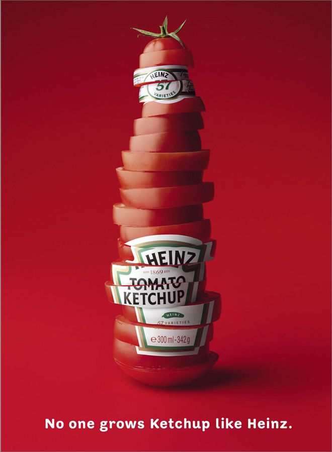
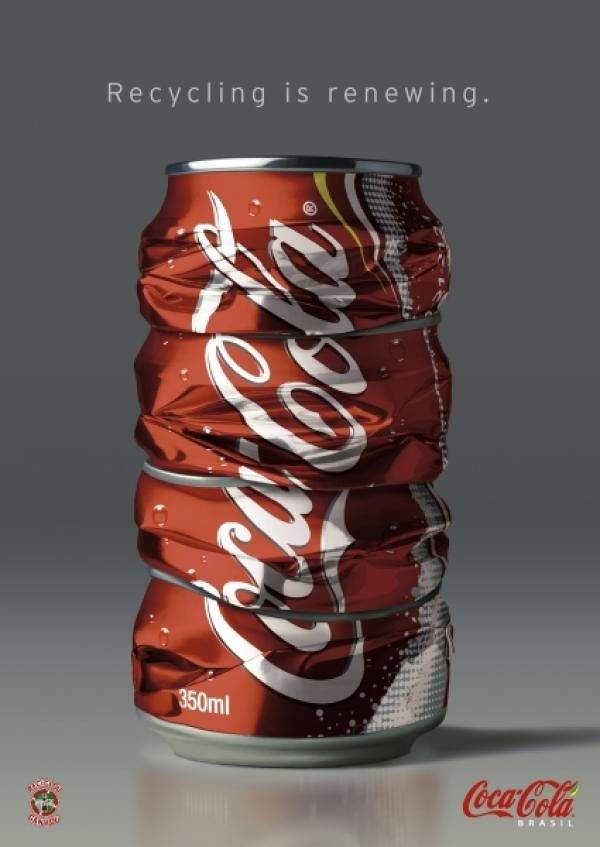
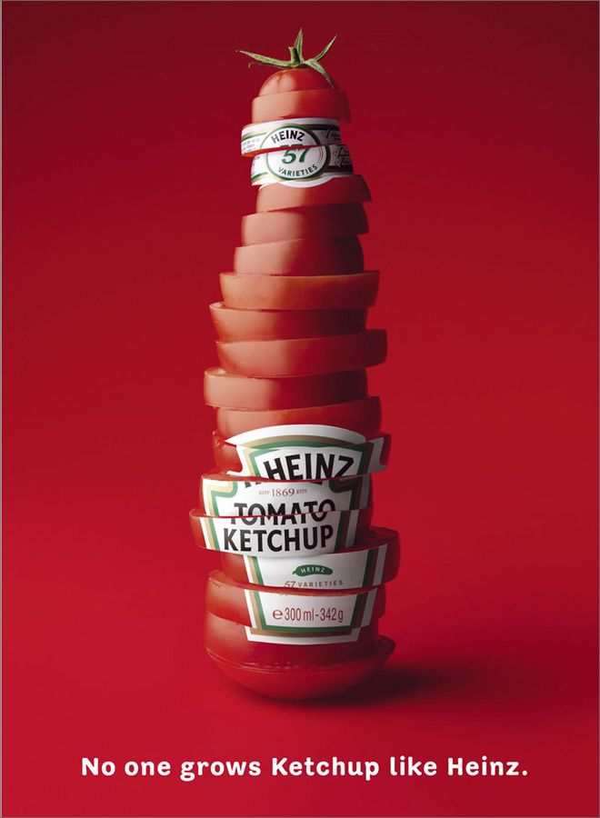
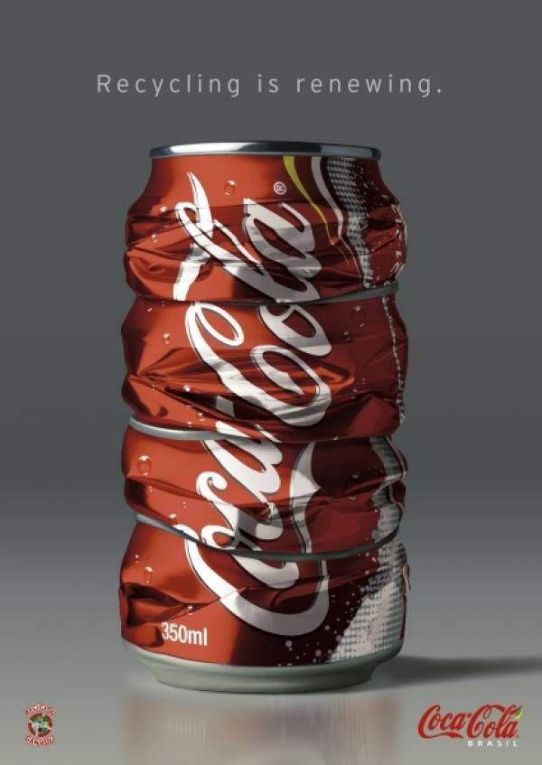
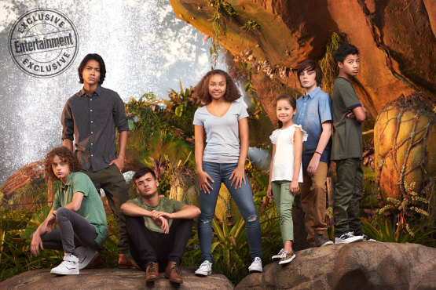

Avatar 2 opnamens zijn begonnen.
De camera's zijn begonnen met filmen voor de nieuwe avatar film van James Cameron. In 2009 kwam Avatar uit, het was een monsterhit. Na een lange tijd wachten zijn er nu dus weer opnamens begonnen voor deel 2! De eerste officiële foto van een aantal nieuwe karakters is al uitgebracht.
Op de foto die genomen is achter de schermen van Avatar 2 zijn onder andere de acteurs te zien die de kinderen van blauwe wezens Jake (Sam Worthington) en Neytiri (Zoe Saldana ) gaan spelen in de vervolgfilms. De volgende generatie bewoners op de betoverend mooie planeet Pandora staat dus al klaar!
(Van links naar rechts: Britain Dalton, Filip Geljo, Jamie Flatters, Bailey Bass, Trinity Bliss, Jack Champion en Duane Evans Jr.)
Natuurlijk zullen de meeste van deze kinderen onherkenbaar te zien zijn als blauwe Na'vi-personages in de film. Alleen Jack Champion, het jochie in het blauwe shirt, speelt een menselijke tiener, genaamd 'Spider', die geboren is op een belangrijke locatie uit de eerste film: het militaire complex Hell's Gate. Volgens de makers is het goed dat in de vervolgfilms ook een jeugdig element zit, hetgeen ontbrak in het eerste deel.
Na jarenlang plannen en voorbereiden en de steeds opnieuw terugkerende nieuwsberichten dat Camerons volgende Avatar-films wéér waren uitgesteld, is de productie nu toch eindelijk écht begonnen. Fans van de best presterende film aan de wereldwijde Box Office aller tijden zullen opgelucht hebben ademgehaald toen het startschot bekend werd gemaakt afgelopen maandag.
Fans van de sci-fi blockbustser moeten overigens nog wel eventjes geduld hebben voordat Avatar 2 daadwerkelijk in de bioscopen te bekijken valt. Op dit moment staat de film gepland op 18 december 2020. Camerons andere drie delen verschijnen respectievelijk in december 2021, 2024 en 2025 .
meer over Avatar 2